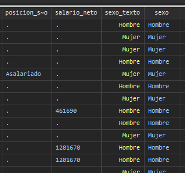

Análisis de información y tablas
Comandos
Los economistas están interesados en estudiar diferentes problemas sociales, para lo cual sus principales fuentes de información son las encuestas nacionales, como la ENAHO, ECE y ENIGH.
En estas bases de datos es común encontrar variables categóricas donde se usan números y se añade una etiqueta para indicar lo que significa.
Ventajas
- La computadora maneja los números de forma más eficiente
- Se asegura consistencia de las encuestas entre años
Sin embargo, dependiendo del usuario, puede ser mejor trabajar con el texto en lugar de su valor numérico.
decode
decode nos permite convertir una variable numérica con etiquetas como sexo, a una variable cuyos valores sean el texto

Esto puede cambiar la forma en la que escribimos condiciones, por ejemplo
*Si queremos contar la cantidad de hombres
*Para la variable sexo usamos
count if sexo==1
*Para la variable sexo_texto usamos
count if sexo_texto=="Hombre"
Etiquetas
Las etiquetas suelen ser útiles porque
- Nos evitan errores al escribir condiciones
- Podemos usar los números para dar un orden a las categorías, como en el caso del nivel educativo
encode
encode es el caso contrario, en este más bien nos interesa pasar de una variable con texto a una variable categórica con números y etiquetas
Ventajas
Usar códigos numéricos también es útil para ordenar las categorías y puede simplificar la creación de nuevas variables
Imagine por ejemplo que nos interesa comparar el ingreso promedio de personas con bachillerato vs personas sin bachillerato
Sería útil generar una variable que nos indique si la persona tiene bachillerato
Podemos usar la variable nivel_educacion, sin embargo, eso implica escribir muchas condiciones
gen bachillerato = 1 if nivel_educacion=="Primaria Completa" | nivel_educacion=="Primaria Incompleta" ...
Escribir la condición en este caso se vuelve complicado, por lo que podemos usar encode para simplificarlo
*Podemos primero definir la etiqueta
label define educacion ///
0 "Ninguno" ///
1 "Primaria incompleta" ///
2 "Primaria completa" ///
3 "Secundaria incompleta" ///
4 "Secundaria completa" ///
5 "Universitario sin título" ///
6 "Universitario con título" ///
9 "No especificado", replace
*Luego generar una nueva variable que use la etiqueta creada
encode niv_educativo, gen(educacion_cat) label(educacion)
Luego de esto veremos que la variable se convierte en categórica; podemos además ver más información usando codebook
codebook
codebook permite ver información adicional sobre una variable, en este caso se puede usar para ver los valores de las etiquetas y el código numérico, así como las frecuencias y las observaciones perdidas.
Resultado
type: numeric (long)
label: educacion
range: [0,9] units: 1
unique values: 8 missing .: 4,839/22,142
tabulation: Freq. Numeric Label
599 0 Ninguno
1,872 1 Primaria incompleta
4,107 2 Primaria completa
3,957 3 Secundaria incompleta
3,306 4 Secundaria completa
979 5 Universitario sin título
2,476 6 Universitario con título
7 9 No especificado
4,839 .
Ahora podríamos verificar la condición usando recode
recode
recode nos permite recodificar los valores de una variable. Esto es útil cuando queremos crear variables nuevas a partir de una variable que ya existe.
Por ejemplo, imagine que nos interesa conocer la diferencia en salarios entre personas que terminaron el colegio y aquellos que no. Note que tenemos la variable educacion_cat, que muestra la siguiente información.
| Número | Nivel Educativo |
|---|---|
| 0 | Ninguno |
| 1 | Primaria incompleta |
| 2 | Primaria completa |
| 3 | Secundaria incompleta |
| 4 | Secundaria completa |
| 5 | Universitario sin título |
| 6 | Universitario con título |
| 9 | No especificado |
Sin embargo, nos interesa agrupar a las personas en solo 2 categorías, 1 si completó bachillerato y 0 si no lo hizo.
Esto lo podemos realizar facilmente con recode de la siguiente manera.
*(4/6=0) significa reemplace todos los valores del 4 al 6 por un 0
recode educacion_cat (0/3=0) (4/6=1), gen(bachillerato)
replace bachillerato=. if bachillerato==9
Ahora podemos calcular el salario neto promedio
Resultado
. mean salario_neto if bachillerato==1
Mean estimation Number of obs = 2,866
--------------------------------------------------------------
| Mean Std. Err. [95% Conf. Interval]
-------------+------------------------------------------------
salario_neto | 555876.2 6915.001 542317.3 569435.1
--------------------------------------------------------------
. *Menos de bachillerato
. mean salario_neto if bachillerato==0
Mean estimation Number of obs = 2,537
--------------------------------------------------------------
| Mean Std. Err. [95% Conf. Interval]
-------------+------------------------------------------------
salario_neto | 300454.8 2684.664 295190.4 305719.1
--------------------------------------------------------------
Tablas
Llegados a este punto ya estamos familiarizados con el uso de Stata, por lo que podemos enfocarnos en analizar los datos que tenemos usando tablas y gráficos.
tab
tab es el comando que se usa para generar la mayoría de tablas en Stata
Su syntaxis es muy simple, solamente se debe de especificar las variables que queremos incluir en la tabla
Resultado
Nivel educativo | Freq. Percent Cum.
-------------------------+-----------------------------------
Ninguno | 599 3.46 3.46
Primaria incompleta | 1,872 10.82 14.28
Primaria completa | 4,107 23.74 38.02
Secundaria incompleta | 3,957 22.87 60.89
Secundaria completa | 3,306 19.11 79.99
Universitario sin título | 979 5.66 85.65
Universitario con título | 2,476 14.31 99.96
No especificado | 7 0.04 100.00
-------------------------+-----------------------------------
Total | 17,303 100.00
Como podemos ver en el resultado, Stata despliega una tabla que nos indica la cantidad de observaciones, el valor en términos porcentuales y una columna adicional llamada cum, que se refiere al porcentaje acumulado.
Esto nos permite de forma muy clara y concisa responder preguntas como por ejemplo, ¿Qué porcentaje de la población cuenta con un grado equivalente o superior a secundaria completa?
tab con 2 variables
No obstante, en ocasiones nos interesa comparar distribuciones entre grupos. Por ejemplo, en este caso nos interesa comparar el nivel educativo entre hombres y mujeres, para esto una tabla con una sola división se nos queda corta.
También es posible agregar 2 variables a la tabla, en este caso la primera será la variable que sale en las filas y la segunda la que sale en las columnas
Resultado
| Sexo
Nivel educativo | Hombre Mujer | Total
----------------------+----------------------+----------
Ninguno | 290 309 | 599
Primaria incompleta | 860 1,012 | 1,872
Primaria completa | 1,981 2,126 | 4,107
Secundaria incompleta | 1,956 2,001 | 3,957
Secundaria completa | 1,497 1,809 | 3,306
Universitario sin tít | 446 533 | 979
Universitario con tít | 978 1,498 | 2,476
No especificado | 4 3 | 7
----------------------+----------------------+----------
Total | 8,012 9,291 | 17,303
Sin embargo, esta tabla no muestra las distribuciones en porcentaje, por lo que no es posible comparar la educación entre grupos. Para evitar esto se pueden usar las opciones col o row, para resumir los valores como porcentaje de la columna o fila.
Resultado
| Sexo
Nivel educativo | Hombre Mujer | Total
----------------------+----------------------+----------
Ninguno | 290 309 | 599
| 3.62 3.33 | 3.46
----------------------+----------------------+----------
Primaria incompleta | 860 1,012 | 1,872
| 10.73 10.89 | 10.82
----------------------+----------------------+----------
Primaria completa | 1,981 2,126 | 4,107
| 24.73 22.88 | 23.74
----------------------+----------------------+----------
Secundaria incompleta | 1,956 2,001 | 3,957
| 24.41 21.54 | 22.87
----------------------+----------------------+----------
Secundaria completa | 1,497 1,809 | 3,306
| 18.68 19.47 | 19.11
----------------------+----------------------+----------
Universitario sin tít | 446 533 | 979
| 5.57 5.74 | 5.66
----------------------+----------------------+----------
Universitario con tít | 978 1,498 | 2,476
| 12.21 16.12 | 14.31
----------------------+----------------------+----------
No especificado | 4 3 | 7
| 0.05 0.03 | 0.04
----------------------+----------------------+----------
Total | 8,012 9,291 | 17,303
| 100.00 100.00 | 100.00
sum
Las tablas son muy útiles para analizar variables categóricas, pero qué pasa cuando variable es numérica, como por ejemplo el salario neto. En este caso es conveniente hacer un resumen estadístico de la variable
sum nos permite de manera rápida, calcular estadísticas acerca de la variable que nos interesa
Resultado
En el resultado se puede observar la cantidad de observaciones, el valor promedio, la desviación estándar y los valores máximos y mínimos.
También es posible combinar tablas con sum, para obtener medidas estadísticas de una variable según categorías.
Por ejemplo, si nos interesa obtener el salario promedio y la desviación estándas según el nivel académico de la persona, entonces podemos usar el siguiente comando:
Gráficos
Por último, podemos ver ahora 2 tipos de gráficos que son útiles para analizar la distribución de variables numéricas
histograma
Un histograma es un gráfico muy común para analizar distribuciones de datos, permite ver por ejemplo la distribución de los ingresos de las personas, los años de escolaridad y otras variables similares
Usando by también se tiene la posibilidad de crear gráficos dividiendo por alguna otra característica, por ejemplo un histograma de los años de escolaridad por zona